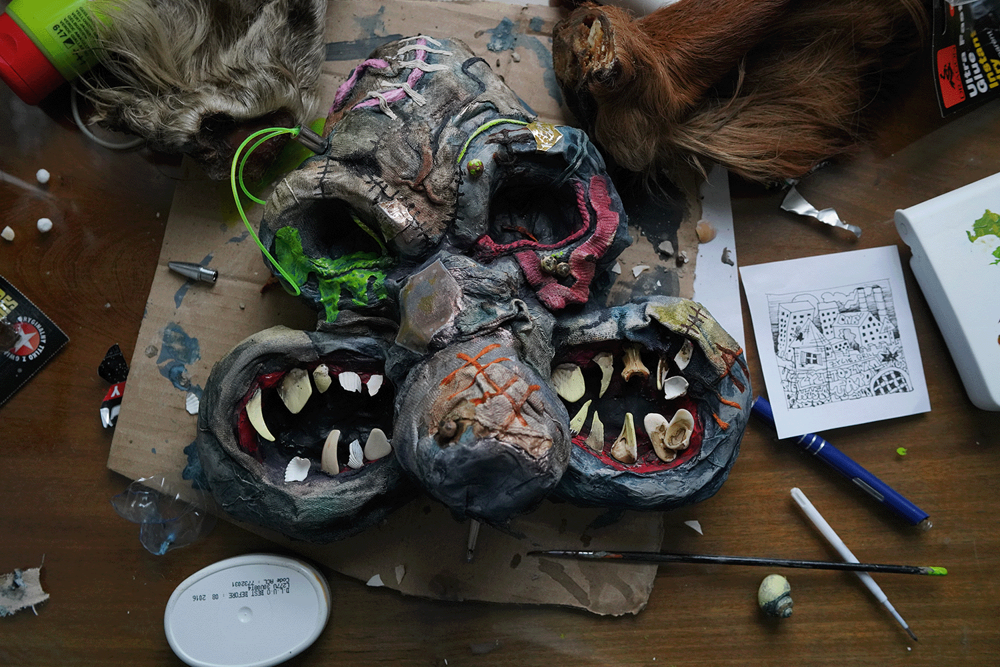
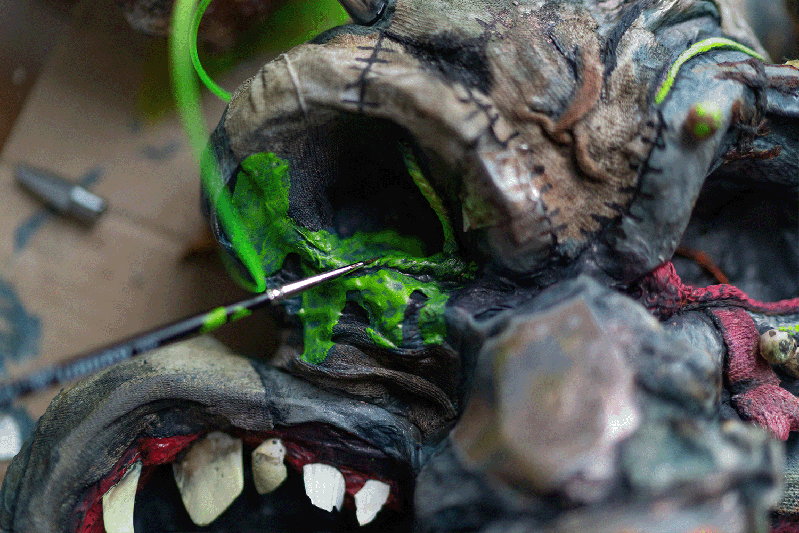

Ćpaj stajl - Złoty Strzał
- Typography
- Branding
Objects made from trash and papier-mâché, then photographed. The front features a sculpture: a satirical portrait of all the group members in the form of a single creature. The installation was created from trash found in the courtyards of Krakow's old town district.
- Date:March 2022
- Client:Ćpaj Stajl
First Mockup

Second Mockup

Second Mockup
